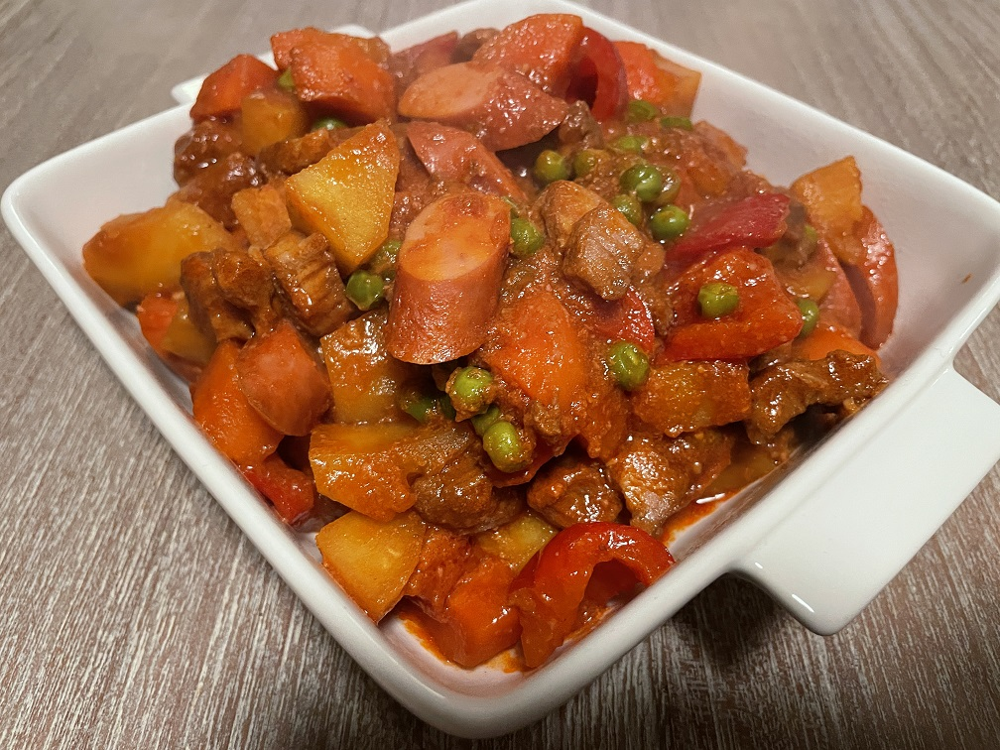

Home
Filipino Pork Menudo
Original by: Kabayan JB

What is this dish?
A small bit from our trustworthy friend, ChatGPT: Filipino Pork Menudo is a traditional Filipino stew that features a rich and flavorful combination of pork, liver, and vegetables simmered in a tomato-based sauce. It's a popular dish often served at family gatherings and special occasions.
Ingredients (5 servings)
- 500 grams of pork
- 2 cans of pork liver
- 5 pieces of hot dog
- 1/2 of a lemon
- 150 milliliters of soy sauce
- 0.5 liter of water
- 4 tablespoons of cooking oil
- 4 cloves of a garlic
- 2 medium sized potatoes
- 2 medium sized carrot
- 1 piece of red onion
- 1 piece of red bell pepper
- 125 grams of peas
- 3 pieces of bay leaves
- 1 tablespoon of sugar
- 250 milliliters of tomato sauce
- Desired amount of salt
- Desired amount of black pepper
Steps #
- Marinate the pork cubes in the soy sauce and lemon for about an hour or longer
- Cut the potatoes, carrots, onions, and bell peppers into cubes
- Saute the garlic and onion in a pan with the cooking oil
- Add the marinated pork, and cook for about 5 minutes until the pork is no longer pink while stirring occasionally
- Add the tomato sauce, water, and bay leaves, then simmer for about 35 minutes, and add water when necessary
- Add the pork liver and keep stirring for about 1 minute
- Add potatoes, carrots, bell pepper, and hot dog, and let simmer until potatoes and carrots are cooked
- Add the peas and sugar, then salt and pepper to taste
- Stir until reached the desired taste
Back to top